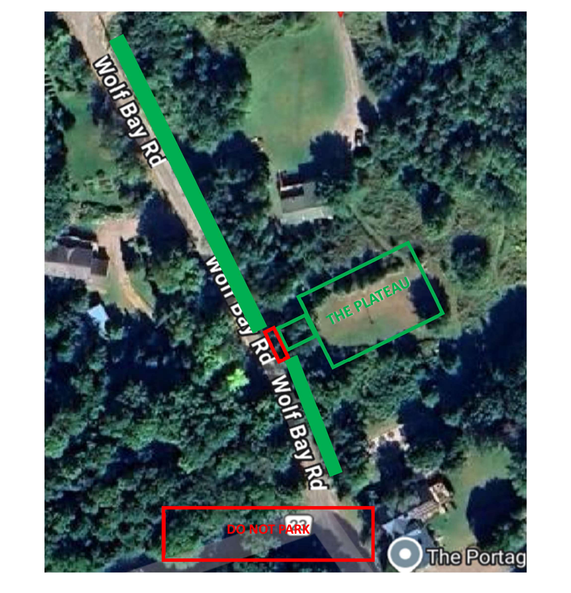
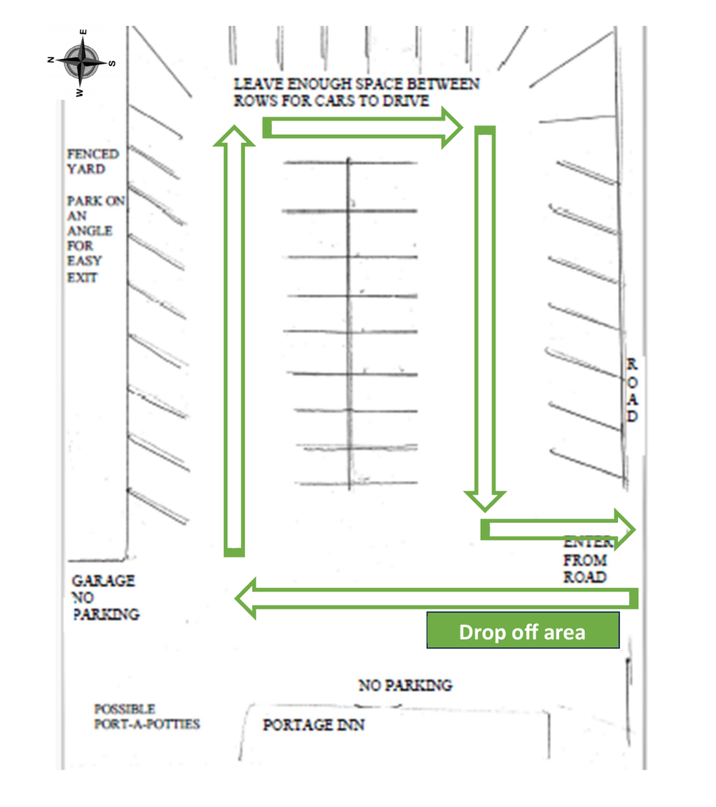

Dear friends and family,
We can hardly believe how close our wedding weekend is, and we're so looking forward to celebrating with you at the Portage Inn. This page is a quick overview of what to expect. The full details are tucked in the questions below, so you can open whichever ones are useful to you.
In short: our ceremony begins at 4:30pm on Saturday, May 30, on the plateau just below the Inn. Most of you will be staying with us at the Portage Inn the night of the wedding. We'll have a simple breakfast together on Sunday morning before everyone heads home.
Wedding timeline
- Fri, May 29 Friday-night guests arrive after 4:00pm
- Sat, May 30 Remaining overnight guests arrive by 2:00pm
- Sat, May 30 Day guests arrive by 4:00pm. Please head straight to the plateau
- Sat, May 30 4:30pm ceremony on the plateau
- Sun, May 31 Bagels & coffee with us before you head home
The Details
Tap any question to expand
When should I arrive?
If you're staying Friday night (close family and out-of-town guests. You know who you are): please arrive at the Portage Inn from 4:00pm onward on Friday, May 29. We'll be getting set up for the wedding and having burgers for dinner.
If you're staying Saturday night only: please plan to arrive at the Inn starting at 2:00pm on Saturday, May 30. This gives you time to check into your room, settle in, and get ready before the ceremony.
If you're not staying overnight at the Inn: please arrive at 4:00pm on Saturday, May 30 and head straight down to the plateau (see the question below) for the ceremony at 4:30pm.
Where is the ceremony, exactly?
The ceremony will take place on the plateau. This is a flat grassy area on the Inn's grounds, just down the hill from the terrace. It's a short, easy walk from the main building (under five minutes).
To get there from the Inn: walk to the lake-side terrace, then follow the path down the hill. You'll see the plateau opening up below the terrace.

Comfortable shoes are a good idea. The path is grassy and may be a little uneven.
What will the day look like?
Here is Saturday's timeline:
- 2:00pmSaturday night overnight guests arrive & settle in
- 4:00pmDay guests arrive. Please head down to the plateau
- 4:30pmCeremony on the plateau
- 5:00pmGroup photo & Cocktail Hour
- 7:00pmDinner
- 8:15pmCake & Champagne
- 9:00pmFirst dance & dancing begins
- 11:30pmLate-night snack
Times are approximate.
What about Sunday morning?
For everyone staying overnight, we'll have a simple breakfast of bagels, cream cheese, and coffee in the Inn's kitchen on Sunday, May 31. Come down whenever you're ready. There's no fixed time.
Where do I park, and where do I go when I arrive?
The Portage Inn has a paved parking lot on-site. A few notes:
- Please do not park on the grassy area or the road. Vehicles parked on the road may be fined or towed.
- If the lot is full, there's overflow parking on Wolf Bay Road just north of the Inn (Please see the Parking Guide sent by email).
To make the most of the lot, please park on an angle along the fence and along the road. This leaves room for two cars nose-to-nose down the middle.

The address for your GPS is: 1563 N Portage Rd, Huntsville, ON P1H 2J6.
When you arrive as an overnight guest, head to the main entrance. Room assignments will be printed at the front desk.
When you arrive as a day-of guest, head directly to the Plateau through the back garden and down the hill.
What should I bring? (overnight guests)
If you're staying overnight, a few things to pack:
- Toiletries: toothpaste, toothbrush, facewash, body wash, shampoo, etc.
- A light jacket or sweater: Muskoka evenings can get cool, even in late May.
- Comfortable shoes for the grass.
- Bug spray: late spring can mean mosquitoes near the lake.
- Anything you require for a comfortable night stay.
If you'd like to take a swim or stroll down to the lake during the weekend, swimwear and a beach towel are also a good idea.
Anything else I should know?
- The Inn is a historic building (built in 1889), so the floors slope a little in places. Please watch your step, especially near the bottom of the main staircase.
- Quiet hours: by local by-law, music and loud noise must move indoors after 11pm. This in no way means the party stops.
- Smoking is not permitted inside the building.
If you have any questions in the meantime, please just reach out to either of us. We can't wait to see you.